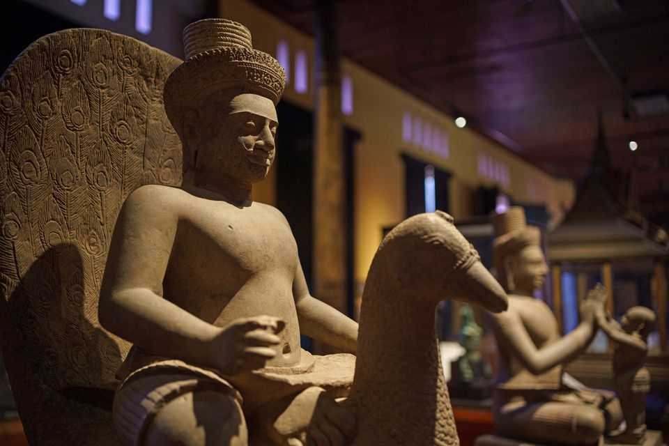

The people behind the largest art heist in history
A new book looks at the trade in masterpieces pilfered from Cambodia
June 11th 2026

TOEK TIK knew the man only as “Sia Ford” (Lord Ford) but had heard “he alone was creating much of the demand that sent looting crews into the temples.” Sometimes Toek Tik and his colleagues would plunder to order: Sia Ford would specify the kind of pieces he was after, and they would go into the Cambodian jungle with their shovels and rope in search of bronzes or depictions of Vishnu.
Sia Ford was, in fact, a British businessman called Douglas Latchford. In a fascinating new book Matthew Campbell, a journalist at Bloomberg Businessweek, describes his role in “a long-term criminal conspiracy that spanned from Cambodia’s killing fields to the Upper East Side”.
Latchford had developed an obsession with the Khmer empire, which lasted from 802ad to 1431AD in Cambodia and parts of Laos, Thailand and Vietnam. In 1974 he opened a gallery in Bangkok, offering hundreds if not thousands of stolen Khmer antiquities to collectors and institutions. Some of his pieces ended up in the Norton Simon Museum in California and the Metropolitan Museum of Art in New York.

Mr Campbell reckons Latchford may have pulled off “the world’s biggest art heist”. The book untangles the murky supply chain for stolen masterpieces in riveting detail. It began with looters such as Toek Tik. “Cambodians were raised to revere such objects,” Mr Campbell notes, seeing them as “avatars of the gods”. But in the wake of the civil war and the Khmers Rouges’ bloody regime, many were desperate. So they took huge statues and bas-reliefs, using pneumatic drills and dynamite if necessary. (Many objects were damaged or destroyed in the process.)
Once artworks were prised free, they were packed into oxcarts or trucks; a broker would get them over the border into Thailand and thence to Latchford. He would find a buyer, inventing provenance and forging documents as required. They often arrived at their prestigious new homes still dusted with Cambodian soil.

Such sophisticated buyers proved undiscerning thinkers. Latchford’s clients gave little consideration to how these spectacular pieces ended up in their display cabinets. Mr Campbell finds that “The Met had been willing, again and again, to augment its collection with works whose legitimacy rested on the slenderest wisps of evidence.” Thanks to the efforts of investigators, the extent of Latchford’s criminal enterprise became clear—though he died in 2020, before facing justice.
“The Man Who Stole the Gods” reads like a thriller, in good ways and bad: sometimes the author cannot resist the hokey phrases of an airport novel. Yet the story romps along with dogged lawyers and a ludicrous, devious antagonist. (Latchford could often be found poolside in Bangkok, flanked by oiled-up young male bodybuilders.) And the tale has a fairly neat resolution: American investigators succeeded in returning many pilfered artefacts to Cambodia, where they are on display in the National Museum in Phnom Penh.
Mr Campbell suggests that Latchford’s story offers a cautionary tale and that the investigation may have put “an end to the entire US market for such looted objects”. That is unrealistic. People will always want to gaze at beautiful, unusual objects from ancient civilisations. That means they will be willing to overlook provenance—and the world’s second-oldest profession will find new recruits. ■
For more on the latest books, films, TV shows, albums and controversies, sign up to Plot Twist, our weekly subscriber-only newsletter